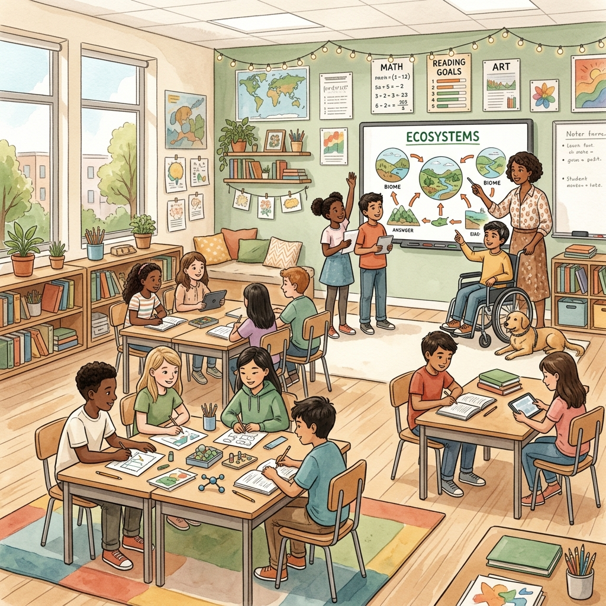

Bu portfolyo, her öğrencinin biricik olduğu ilkesinden yola çıkarak tasarlanmış kapsayıcı ve dijital öğretim materyallerini sergilemektedir. Sosyal bilgiler alanlarında, evrensel tasarım ilkeleriyle şekillenen öğretim uygulamalarım ve akademik çalışmalarım bu platformda bir araya gelmektedir.
KeşfetBu portfolyo, sosyal bilgiler öğretmenliği ile özel eğitim disiplinlerini bir araya getirerek tüm öğrenci profillerine yönelik erişilebilir ve dijital öğrenme materyalleri geliştirme amacını taşımaktadır. Eğitimde fırsat eşitliği ilkesinden hareketle, her öğrencinin bireysel öğrenme gereksinimlerine duyarlı, teknoloji destekli öğretim uygulamaları tasarlanmıştır.
Bu materyaller, farklı öğrenme stillerine ve özel gereksinimlere sahip bireylerin akademik başarılarını desteklemeyi hedeflemektedir. Kapsayıcı eğitim anlayışı, bu portfolyonun temel pedagojik yaklaşımını oluşturmaktadır.

Akademik çalışmalarımı, öğretim felsefemi ve eğitim materyallerimi keşfedin.
Özel eğitim ve sosyal bilgiler çift anadal programında yetişen bir öğretmen adayı olarak mesleki kimliğimi, öğretim felsefemi ve eğitime bakış açımı keşfedin.
KeşfetEtkileşimli ders sunumları, eğitsel videolar, infografikler ve değerlendirme oyunları gibi dijital öğretim materyallerimi inceleyin.
İnceleSosyal bilgiler ve özel eğitim entegrasyonu çerçevesinde akademik altyapımı, hedef kitle analizimi ve konu alanı uzmanlığımı keşfedin.
Oku